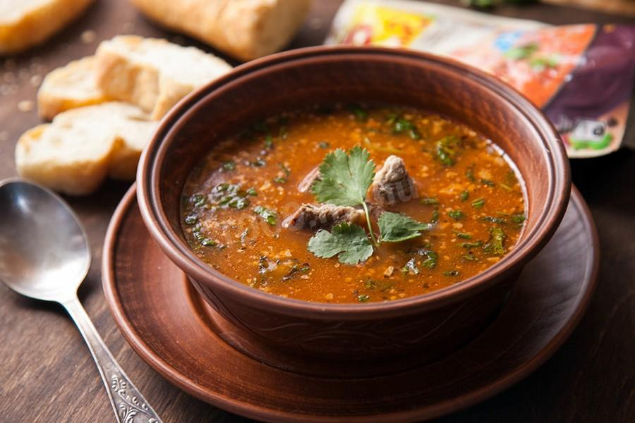

Kharcho

Description
Kharcho, also spelled as Harcho, is a traditional Georgian soup containing beef, rice, cherry plum purée and chopped walnuts.
The soup is usually served with finely chopped fresh coriander.
Ingredients
- 3 lb beef stew meat
- 4 Tbsp light olive oil (or any cooking oil), divided
- 1 medium onion, chopped
- 2 celery ribs, finely chopped
- 4 cups beef broth + 4 cup filtered water
- 28 oz can diced tomatoes
- 2 dry bay leaves
- 1 tsp ground coriander seeds
- 1 tsp smoked paprika
- 2 garlic cloves, pressed
- 1/2 cup uncooked white rice
- 2 Tbsp fresh lemon juice (from 1 medium lemon)
- 1/4 cup fresh parsley, chopped, plus more to serve
- 1/4 cup fresh dill, chopped, plus more to serve
Steps
- Sprinkle meat with 3 tsp salt and stir. Heat a dutch oven or soup pot over medium/high heat and add 2 Tbsp oil. Once oil is hot, add beef in 2 batches,
sautéing until browned on all sides (don’t worry about cooking it through). Remove from pot and set aside.
- Add chopped onion and celery with more oil as needed. Saute 5 minutes until softened.
- Add canned tomatoes with their juice, 4 cups broth, 4 cups water, 2 bay leaves and browned beef.
Bring to a boil then reduce heat, cover and simmer 1 1/2 to 2 hours or until beef is tender.
- Add 1/2 cup white rice, 2 Tbsp lemon juice, 2 pressed garlic cloves, 1 tsp coriander,
1 tsp paprika. Cover and simmer 20 minutes or until rice is tender.
- Remove from heat and add 1/4 cup parsley and 1/4 cup dill then cover and let sit off heat another 10 minutes before serving.
Season to taste with salt and pepper if needed and serve with more fresh herbs as desired.